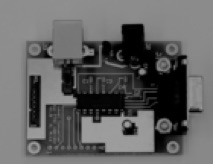

CAPH
High level dataflow programming for FPGAs
CAPH
High level dataflow programming for FPGAs
About CAPH
CAPH is a domain-specific language for describing and implementing stream-processing applications on reconfigurable hardware, such as FPGAs. CAPH generates VHDL code from high-level descriptions of signal or image processing applications. CAPH relies upon the actor/dataflow model of computation. Applications are described as networks of purely dataflow actors exchanging tokens through unidirectional channels and the behavior of each actor is defined as a set of transition rules using pattern matching.
• Higher-order, purely functional language for description of complex dataflow networks
• Rich type system with sized-integers, booleans, floats, fully polymorphic algebraic data types and dependent types
• Automatic type inference and type-checking
• Higher-order actors (actors taking functions as parameters)
• Pattern-matching based description of actor behavior
• Graphical visualisation of dataflow networks
• Code simulation with trace facilities
• SystemC back-end for simulation
• Generates target-independant, ready-to-synthetize, time and space-efficient VHDL code
• Foreign-function interface to use existing SystemC or VHDL code
A simple example
Below is the description of a basic image processing of a basic application for extracting vertical edges in images. For each pixel, the local horizontal derivative is approximated by computing the absolute value of the difference between this pixel and the previous pixel on the same line, and the resulting value is compared to a fixed threshold for producing a binary image (with edge pixels encoded as 1 and background pixels as 0). Images are encoded as structured streams of pixels (with start/end of line/frame being encoded with the special « < » and « > » tokens. Three actors (add, asub and thr) and one global function (f_abs) are involved. These actors are instanciated and combined using net definitions to build the dataflow network describing the application.
-- Global functions
function f_abs x = if x < 0 then -x else x;
-- Actor descriptions
actor dp -- One-pixel delay
in (i:signed<s> dc)
out (o:signed<s> dc)
var s: {S0,S1,S2} = S0
var z: signed<s>
rules
| (s:S0, i:'<) -> (s:S1, o:'<)
| (s:S1, i:'>) -> (s:S0, o:'>)
| (s:S1, i:'<) -> (s:S2, o:'<, z:0)
| (s:S2, i:'p) -> (s:S2, o:'z, z:p)
| (s:S2, i:'>) -> (s:S1, o:'>);
actor sub
in (i1:signed<s> dc, i2:signed<s> dc)
out (o:signed<s> dc)
rules
| (i1:'<, i2:'<) -> o:'<
| (i1:'>, i2:'>) -> o:'>
| (i1:'p1, i2:'p2) -> o:'f_abs(p1-p2);
actor thr (t:signed<s>)
in (i:signed<s> dc)
out (o:unsigned<1> dc)
rules
| i:'< -> o:'<
| i:'> -> o:'>
| i:'p -> o:if p > t then '1 else '0;
-- network description
stream inp:signed<10> dc from "pcb";
stream res:unsigned<1> dc to "result";
net res = thr 40 (sub (inp, dp inp));
Copyright © 2013-now J. Sérot ‐ All Rights Reserved
Last update : 2019/05/09
pcb.png
result.png
Dataflow network
Simulation and
execution results
